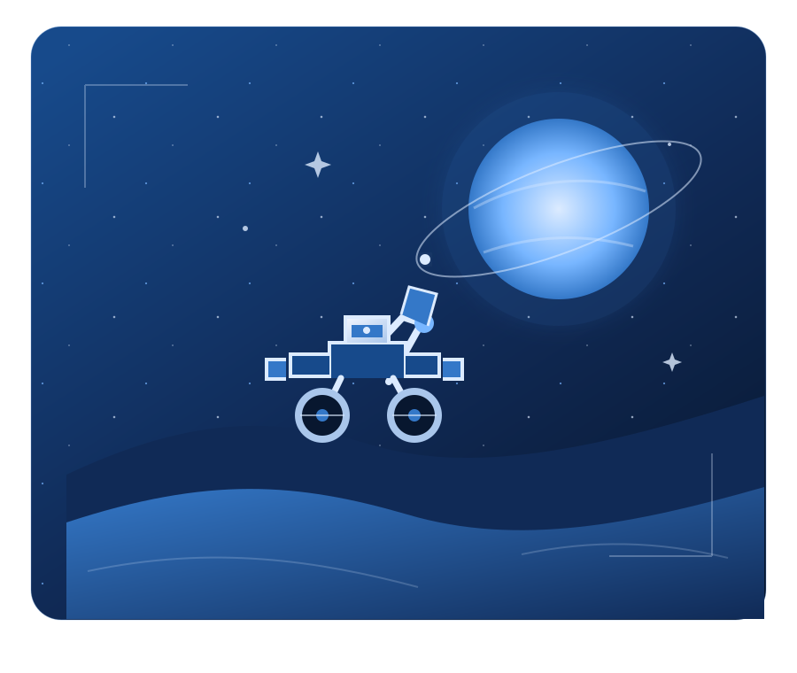

Planos y diseños
No hay archivos CAD o planos de ingeniería disponibles en el proyecto actual.
CBA SCIENCE · INGENIERÍA
Este espacio reúne información técnica verificada del proyecto de ingeniería y materiales que puedan convertirse en experiencias de aprendizaje.
DOCUMENTACIÓN DEL PROYECTO · PENDIENTE DE INCORPORAR

No hay archivos CAD o planos de ingeniería disponibles en el proyecto actual.
Fotografías, especificaciones y resultados se agregarán cuando estén verificados y autorizados.
Las actividades educativas relacionadas se publican por separado en el catálogo STEM.
Explorar recursos STEM